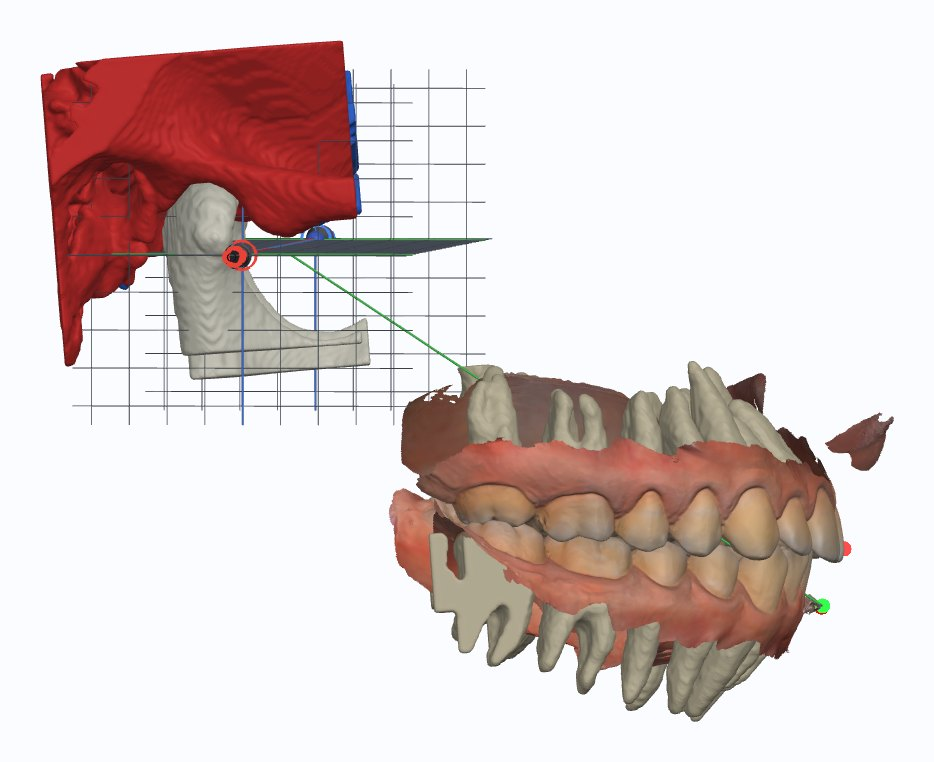

Капи та реабілітації
Splints & rehabilitation
Виготовлене — спочатку перевірене в русі
Made only after it moved right

Планування на змонтованому кейсі, моделювання капи в GnathoLine, фрезерування у Stelmakh LAB. Реабілітації зі зміною висоти прикусу — із супроводом.
Planning on the mounted case, splint design in GnathoLine, milling at Stelmakh LAB. Rehabilitations that change the vertical dimension, with follow-up.
НапрямкиDirections